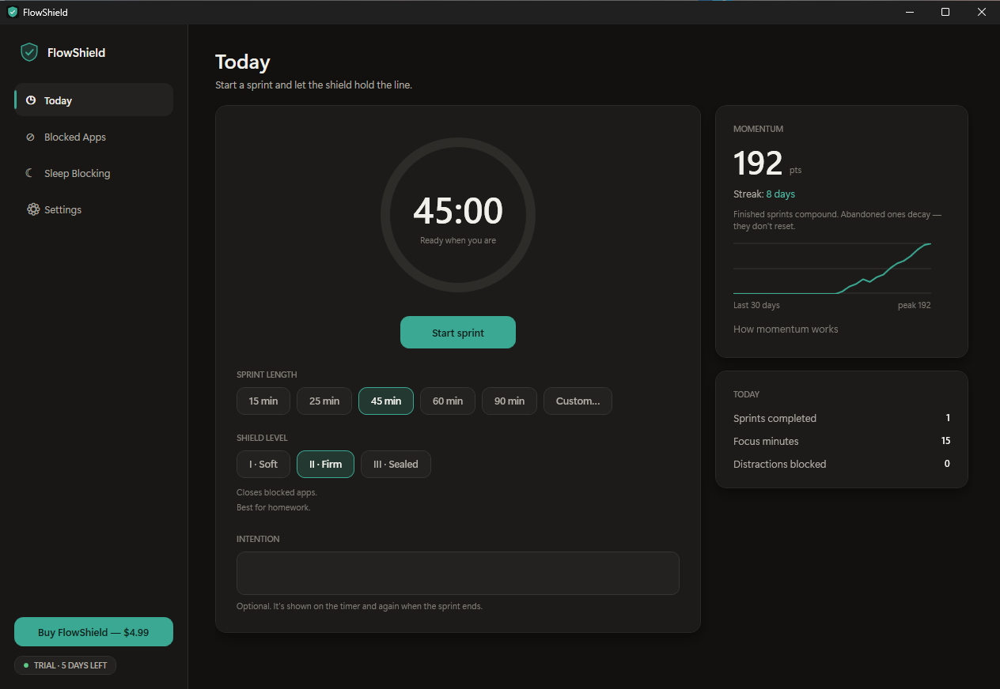
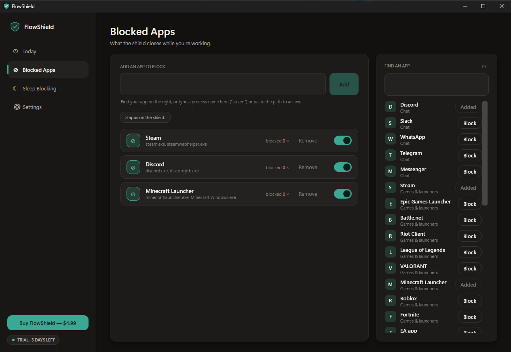
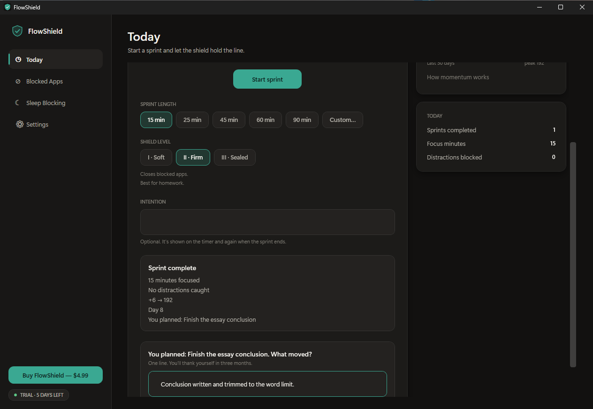

FlowShield is a Windows focus timer that puts distractions behind a shield
you choose — Soft, Firm, or Sealed — and logs every finished sprint into
momentum you can see at the end of the day.
FlowShield runs on Windows, so there is nothing
to install on a phone — copy the link and open it on your PC.
7 days free, then $4.99 once · Windows 10 & 11 · No account, no card ·
Terms & privacy
Windows warns the first time. The build isn’t
code-signed yet, so you will see “Windows protected your PC”:
choose More info, then Run anyway.
Why, and what the installer does.

Today. The timer, the shield you chose, and momentum that compounds
rather than resetting. Real build · sample data
Turn your 5–7 PM into a protected homework block: Discord, Steam, and
Minecraft stay on the blocklist until the sprint ends, and the session is
saved with your one-line “what moved?” note.
3Shield levels
$4.99Once, not monthly
0Telemetry sent
A sample day
Three shields, one schedule
Pick how hard the shield pushes back for each sprint — the same day can
carry Soft, Firm and Sealed at different hours.
Today · sample day
8–3
ClassesSoft
Light shield — apps stay open; FlowShield notes the distraction.
5–7
Homework blockFirm
Blocked launchers get a warning, then close, for the length of the sprint.
9–10
Deep workSealed
Apps close and the blocklist locks until the sprint ends.
10+
Gaming windowOff
Shield down — Steam and Discord open when you choose.
Momentum48 ptsStreak: 3 days
Today50 min2 sprints · 6 blocks
01
Build a blocklist
Add process names you actually open when you drift — Discord, Steam, Minecraft launchers, browsers you use for scrolling.
02
Start a sprint with a shield
Choose Soft, Firm, or Sealed and a length. FlowShield holds that line for the timer.
03
See the day land
Finished sprints add momentum and focus minutes. An optional one-line journal captures what moved.
What does a Shield do?
Three levels of resistance
Pick how hard it should be to quit today — from a quiet notice to a locked blocklist.
Shield I
Soft
For lighter stretches — between classes, or when you need Discord open for
a group project but still want a nudge when a blocked game launches.
Records the hit — FlowShield notes the blocked app when it appears.
Shows a brief notice — inside FlowShield’s own window; the distracting app keeps running.
Low friction — use Soft when a full close would be too harsh for the moment.
Shield IIHomework block
Firm
After school, when Minecraft and Discord are one click away: Firm gives a
blocked app a few seconds’ warning to save, then closes it and keeps it
closed for the rest of the sprint, while you can still edit the blocklist.
Warns, then closes — a notice names the app, it is asked to close itself so it can offer to save, and it is closed if it is still open a few seconds later. Hard kill mode skips the warning.
Holds the line — blocked apps stay closed for the rest of the sprint.
Still editable — adjust the blocklist mid-sprint if a study tool got caught.
Shield III
Sealed
For the late-night review, when “just checking” Steam turns into an hour:
blocked apps are warned and closed, and the blocklist locks until the sprint ends.
Closes like Firm — the same warning, then the same close, for everything on the list.
Locks the list — you cannot add or remove blocked apps mid-sprint.
Ends with the sprint — ending early unlocks the list again.
The real thing
This is the app, not a mock-up
Captures of the build you download, with sample data in it. No stock photos and
no screens we haven’t built.
A sprint starts at the Firm shield and Steam,
which is on the blocklist, closes a couple of seconds later. FlowShield says
“Steam closed by the shield” and the timer keeps running. Recorded on a
clean Windows 11 machine; no sound.

Your blocklist. Pick from the list or type a process name.

The end of a sprint, and the one line you write about it.
Built in
Built for people who already know what to do
One-line session journal
Every sprint ends with one optional prompt: what moved? The answer is stored locally with that session. Export your journal to CSV or Markdown whenever you want it elsewhere.
Sleep blocking
Set a nightly window where the shield raises itself. The 1 a.m. version of you doesn't get a vote.
Local by default
Your sessions, blocklists and journal never leave your PC. They are encrypted locally with Windows DPAPI.
Try it free. Buy it once.
Seven days with everything unlocked, then $4.99 to keep FlowShield for good. No subscription.
Most blockers charge $30–$60 every year. FlowShield is $4.99, once, for up to 3 PCs.
Free trial
7 daysfree
Download it and use the whole app for a week. No card needed.
The price you see is the price you pay. No subscription, no renewals.
Everything, for good.
Pay once — yours to keep
Unlimited blocked apps
All three shields — Soft, Firm & Sealed
15, 25, 45, 60 & 90-minute sprints
Momentum score & day streak
Sleep blocking schedules
Hard kill mode for instant closing on Soft
Use it on up to 3 PCs
14-day refund, no reason needed ·
No account to create · Nothing about your sprints leaves your PC
No account. No cloud. No tracking.
Your data stays on your PC
Your sessions, journal, blocklist and momentum score are stored locally and encrypted with Windows DPAPI under your Windows account. The only thing that ever leaves your PC is the licence check: your licence key, the email you used at checkout, a salted device identifier, and your device name, sent to confirm your purchase. Read the privacy policy.
Straight answers
Including what FlowShield doesn’t do. Better to know now than after you have paid.
What does FlowShield actually block?
Desktop applications on Windows 10 and 11 — games, launchers, chat apps, anything that
runs as its own program. You pick them once and a sprint keeps them shut.
Does it block websites?
Not today. FlowShield blocks applications, not pages inside your browser, so a browser tab
is still a way around it. That is deliberate for now: the apps that eat an evening are usually
programs, not tabs, and blocking them well beats blocking everything badly.
Is there a Mac or phone version?
Not today. FlowShield is Windows 10 and 11 only — there is no Mac app, no iPhone or
Android app and no browser extension. The Windows app is what we are making good first, and
we would rather say that plainly than leave you to find out after buying.
What does the installer do to my PC?
It runs as a normal user program. No admin rights, no drivers, no services and no system
settings changed, and no separate .NET install. It only closes the applications you chose,
while a sprint you started is running. Uninstalling removes it and its startup entry.
Because the build isn’t code-signed yet, Windows shows “Windows protected your
PC” the first time you run the installer. Choose More info, then Run
anyway. A code-signing certificate is on the list; until it is bought, every release
starts from zero SmartScreen reputation, and we would rather say so here than let you
meet it unwarned.
What happens when the trial ends?
Seven days from the first time you open it, with every feature unlocked and no card asked
for. After that the app locks until you buy it; nothing you have recorded is deleted.
Is $4.99 really once?
Yes. One payment, no subscription and no renewal, on up to 3 PCs. Most blockers charge
$30–$60 every year instead.
What if I buy it and don’t like it?
Email us within 14 days and we will refund it in full. You do not need to give a reason,
and the refunded licence stops working. The whole policy is on the
refund page. The seven-day trial is there so it rarely
comes to that: the app is not crippled during it, so you can find out before you pay.
Where does my data go?
Your sprints, journal and blocklist stay on your PC. Buying sends your email and payment
to our payment provider. Entering your licence key in the app sends it, your email,
a device ID (a one-way hash, not your hardware details) and your PC and Windows user name
to our licence server, so the 3-PC limit can be counted. The
privacy policy lists everything.